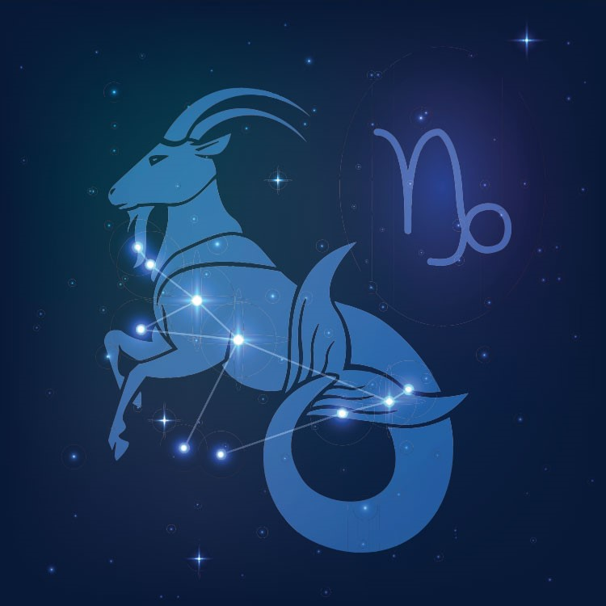

Məlumatlar
Bürcün 12 bürcünün onuncusu olan Oğlaq bürcünün dövrü hər il 22 dekabr – 20 yanvar baş verir. Ulduz cədvəlinizdə Oğlaq planetinin yerləşməsi olmasa belə, bu bürcün yer enerjisini oyatmaq üçün müxtəlif planetlər il boyu Oğlaq bürcünə səfər etdiyi üçün bu enerjini başa düşmək vacibdir.
Karakteristikalar
- Etibarlı
- Əməksevər
- Ciddi
- Məsuliyyətli
Maraqlı Məlumatlar
O, öz məqsədinə çatmaq üçün illərlə də çalışmağa hazırdır. Oğlaqlar hər şeyə çox ciddi baxırlar. Onlar gündəlik boş söhbətlərə çox da uymurlar, lakin çox güclü, məqsədyönlü, qətiyyətlidirlər.